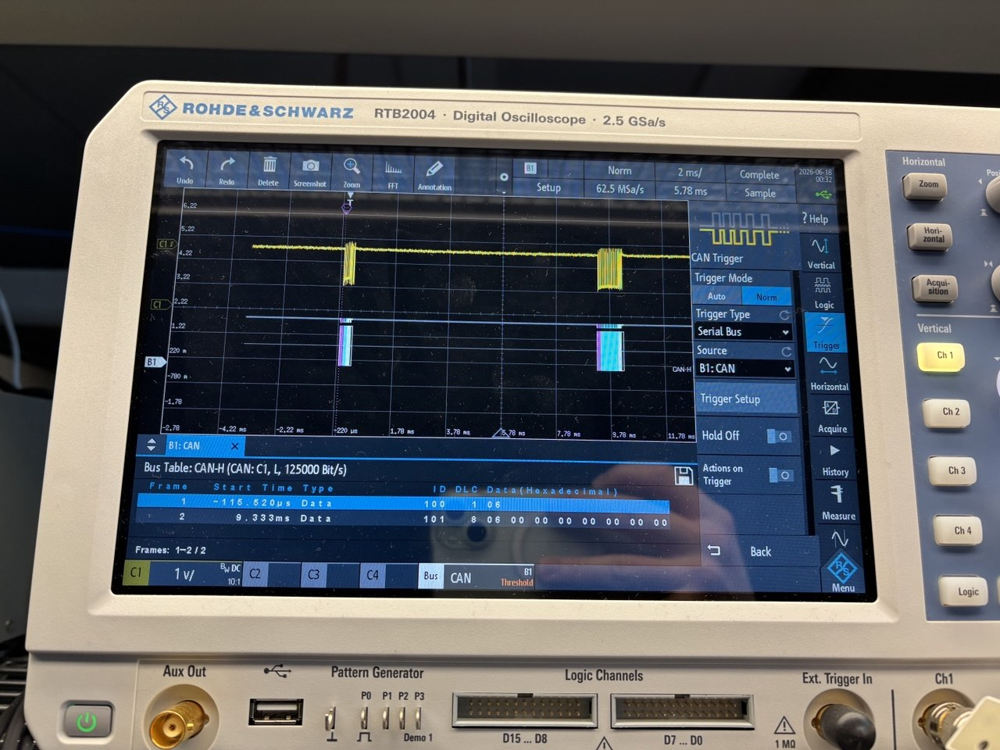
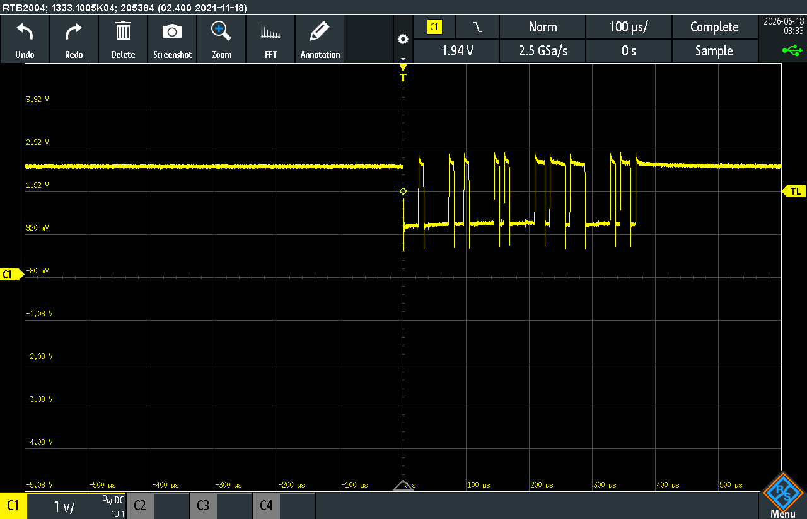

The state of SC FSM
Today, Nick and I discovered that development of FSM for SC has not been even started. This created a lot of stress, as Rita explicity said that Raspberry Pi code is "completed and tested". Since, SC FSM is a crucial part of elevator operation, I asked Rita to focus all her efforts on catching up with this task. As a contingency plan, Nick and I prepared to develop the FSM ourselves, if Rita is unable to deliver by Thursday/Friday.
EC Testing
I implemented full elevator protocol for EC yesterday
(2026-06-16). Today, I
am testing how it actually interacts with SC. To do this, Rita
showed me how to use the program she copied from course shell
that runs on RPi and allows to manually send messages to
various controller in the system.
I used a DB9 breakout cable to monitor message on the lab oscilloscope in addition to serial interface implemented in EC code.
Initially, there were bugs in the EC configuration:
- Incorrect Data Length Code setting
- Errors in EC FSM


- EC sends a frame informing SC that homing is done, EC enters idle state and awaits commands
- SC (manually) sends a floor request
- EC enters moving state and periodically sends heartbeat frames with floor field set to 0 (indicating move state of EC)
- At the end of move, EC sends a frame informing all nodes of the current floor position and indicating the move is completed
- EC enters idle state again
Tested Nick's CAN bus cable
Nick manufactured a CAN bus cable connecting all controller nodes
together. So, I re-soldered terminating 120 Ohm resistors to ends
of the bus in the new configuration. CC and FC1 received the
terminating resistors. During initial testing, the cable was
found to be faulty, so I used a lab oscilloscope to check the
signal integrity.
